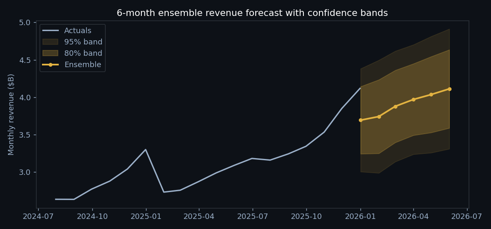

01 · FORECASTING
Ensemble projection with honest uncertainty
ARIMA, Prophet, and XGBoost run against every driver, weighted by walk-forward backtest error. The shaded bands are ~80% and ~95% confidence intervals, sized from residuals and widened where the models disagree. Wide bands are information, not decoration.
